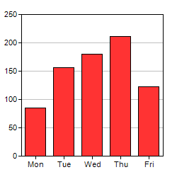

To get a feeling of using ChartDirector, and to verify the ChartDirector development environment is set up properly, we will begin by building a very simple bar chart.
The following program comes from the sample programs included in the ChartDirector distribution. Please refer to the Installation section for details and how to compile it.
[The following code is available in "cppdemo/simplebar".]
#include "chartdir.h"
int main(int argc, char *argv[])
{
// The data for the bar chart
double data[] = {85, 156, 179.5, 211, 123};
const int data_size = (int)(sizeof(data)/sizeof(*data));
// The labels for the bar chart
const char* labels[] = {"Mon", "Tue", "Wed", "Thu", "Fri"};
const int labels_size = (int)(sizeof(labels)/sizeof(*labels));
// Create a XYChart object of size 250 x 250 pixels
XYChart* c = new XYChart(250, 250);
// Set the plotarea at (30, 20) and of size 200 x 200 pixels
c->setPlotArea(30, 20, 200, 200);
// Add a bar chart layer using the given data
c->addBarLayer(DoubleArray(data, data_size));
// Set the labels on the x axis.
c->xAxis()->setLabels(StringArray(labels, labels_size));
// Output the chart
c->makeChart("simplebar.png");
//free up resources
delete c;
return 0;
}The code is explained below:
#include "chartdir.h"
To use the ChartDirector API, you just need to include the "chartdir.h" header file. This header file will in turn include other necessary header files.
XYChart *c = new XYChart(250, 250);
The first step in creating any chart in ChartDirector is to create the appropriate chart object. In this example, an XYChart object of size 250 x 250 pixels is created. In ChartDirector, XYChart represents any chart that has x-axis and y-axis, such as the bar chart we are drawing.
c->setPlotArea(30, 20, 200, 200);
The second step in creating a bar chart is to specify where should we draw the bar chart. This is by specifying the rectangle that contains the bar chart. The rectangle is specified by using the (x, y) coordinates of its top-left corner, together with its width and height.
For this simple bar chart, we will use the majority of the chart area to draw the bar chart. We will leave some margin to allow for the text labels on the axis. In the above code, the top-left corner is set to (30, 30), and both the width and height is set to 200 pixels. Since the entire chart is 250 x 250 in size, there will be 20 to 30 pixels margin for the text labels.
Note that ChartDirector uses a pixel coordinate system that is customary for computer screen. The x pixel coordinate is increasing from left to right. The y pixel coordinate is increasing from top to bottom. The origin (0, 0) is at the top-left corner.
For more complex charts which may contain titles, legend box and other things, we can use this method (and other methods) to design the exact layout of the entire chart.
c->addBarLayer(DoubleArray( data, sizeof( data)/ sizeof( *data)));
The above code adds a bar layer to the XYChart. In ChartDirector, any chart type that has x-axis and y-axis is represented as a layer in the XYChart. An XYChart can contain multiple layers. This allows "combination charts" to be created easily by combining different layers on the same chart (eg., a chart containing a line layer on top of a bar layer) .
In the above line of code, the argument is an array of numbers representing the values of the data points.
c->xAxis()->setLabels( StringArray( labels, sizeof( labels)/ sizeof( *labels)));
The above code sets the labels on the x-axis. The first method XYChart.xAxis retrieves the Axis object that represents the x-axis. The second method Axis.setLabels binds the text labels to the x-axis. The argument to the setLabels method is an array of text strings.
c->makeChart("simplebar.png");
Up to this point, the chart is completed. We need to output it somehow. In our simple project, we output the chart as a PNG formatted file.
For the image format, in addition to PNG, ChartDirector supports JPG, GIF, BMP and SVG. For output methods, ChartDirector supports generating the image as a file and in memory.
Note: The trial version of ChartDirector will include small yellow banners at the bottom of the charts it produces. These banners will disappear in the licensed version of ChartDirector.